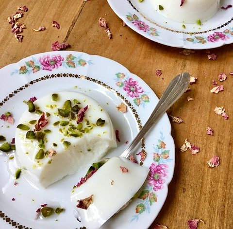

Muhallabieh

Description:
Muhalabieh (مهلبية mahalabie or mhalbe or mouhalabiyh ) milk pudding that is so popular and so easy to make requests just few basic ingredients and you will have a tasty and light dessert made in just 15 minutes of your time.
Ingredients
- 500 ml (2 cups) of milk ( plus little to dissolve the corn starch)
- 4 tbsp. (85g) of sugar
- 2 tbsp. (full spoons) of corn starch ( each cup of milk requests 1 tbsp. of starch)
- 1 teaspoon of rose water ( or blossom water)
- nuts, raisin to garnish
METHOD
- Combine in a sauce pan milk and sugar. Start to heat the milk on a Low heat.
- In a small amount of milk (50-100 ml) add the corn starch and dissolve it
- Add the dissolved corn starch into a milk and sugar mixture and start to whisk continuously until the milk starts to thicken. Don't leave the muhallabieh without your attention because it is very easy to be burnt.
- After 7-10 minute the milk will get a creamy consistency, add the rose (blossom) water and remove from heat. On this stage the milk pudding (muhallabieh) will not be super thick but it will thicken more once its chilled.
- Divide the mixture into a portions and let it cool down at a room temperature. Garnish muhallabieh per your taste and before to place it into fridge cover with clean wrap.